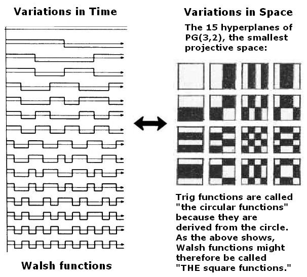
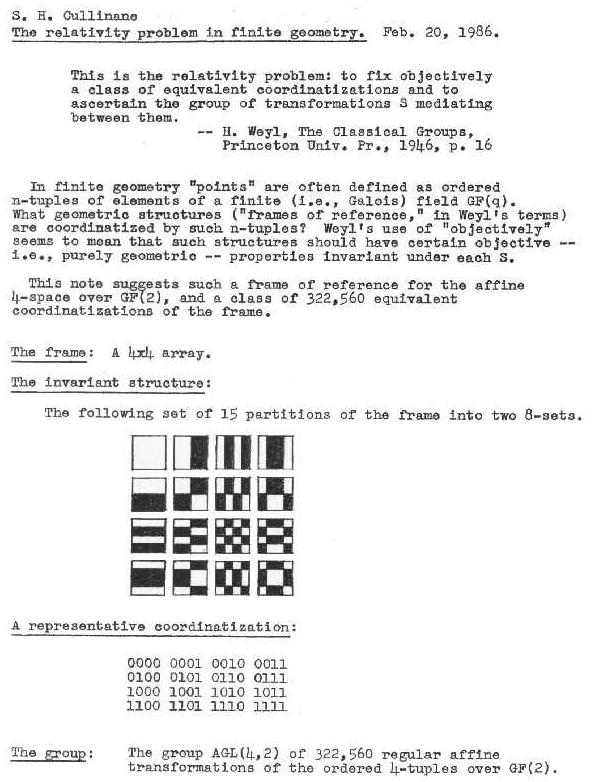
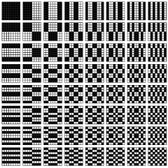
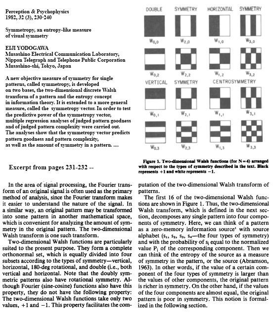

Symmetry of Walsh Functions
by Steven H. Cullinane
Walsh functions have an inherent symmetry that is best seen by
regarding the non-constant Walsh functions as hyperplanes in finite geometry.
Such symmetry is exhibited by the 15 affine hyperplanes of the 4-space over
the 2-element field.
For definitions of Walsh functions, see
The first sixteen Walsh functions and
Mathworld -- Walsh Function.
For an excellent introduction to Walsh functions, by Benjamin Jacoby
(pdf format),
click here.

The above illustration shows that
the first 16 Walsh functions
(from Jacoby's article)
are isomorphic to the 16 parts of the figure
in the following research note:

A related picture may be found on page 573
of A New Kind of Science, by Stephen Wolfram
(Wolfram Media, 2002):

This is a larger set of Walsh functions,
based on an 8x8 square.
Note that the 16 pictures
in the upper left quadrant
are essentially the same as
the 16 pictures in my 1986 note.
For more on symmetry properties in finite geometry, see
Diamond Theory.
For another picture showing the equivalence of nonconstant Walsh
functions with the 15 affine hyperplanes that account for 4x4 symmetry
in diamond theory, see the 15 "stencils" in Fig.
VIII-8 of Shift Register Sequences, by Solomon W. Golomb,
Holden-Day, 1967 (Revised edition published by Aegean Park Press, 1982).
For a picture showing a set of Walsh functions
arranged in various visually striking ways, see
Mathworld -- Walsh Function.
For a bibliography of the theory of Walsh functions, click
here.
For a bibliography of the applications of Walsh functions, click
here.
For some philosophical remarks
related to Walsh functions, see
Time Fold.
Update of February 9, 2012 --
Yodogawa defines his concept of "symmetropy."
An author in Tokyo wrote on applying Walsh function symmetry in 1982.

Reference Type: Journal Article
Author: Yodogawa, Eiji
Primary Title: Symmetropy, an entropy-like measure of visual symmetry
Journal Name: Attention, Perception, & Psychophysics
Cover Date: 1982-05-01
Publisher: Springer New York
Issn: 1943-3921
Subject: Behavioral Science
Start Page: 230
End Page: 240
Volume: 32
Issue: 3
Url: http://dx.doi.org/10.3758/BF03206227
Doi: 10.3758/BF03206227
Page last maintained Sept. 14, 2004, then Feb. 9, 2012. Page created August 31, 2001.